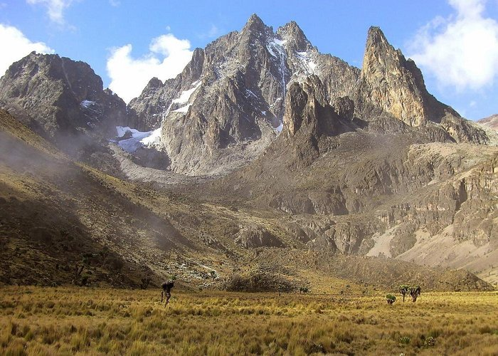
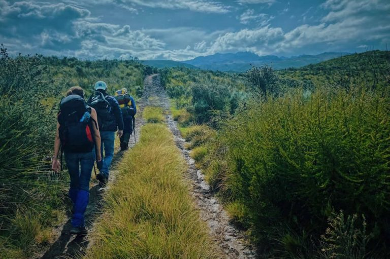
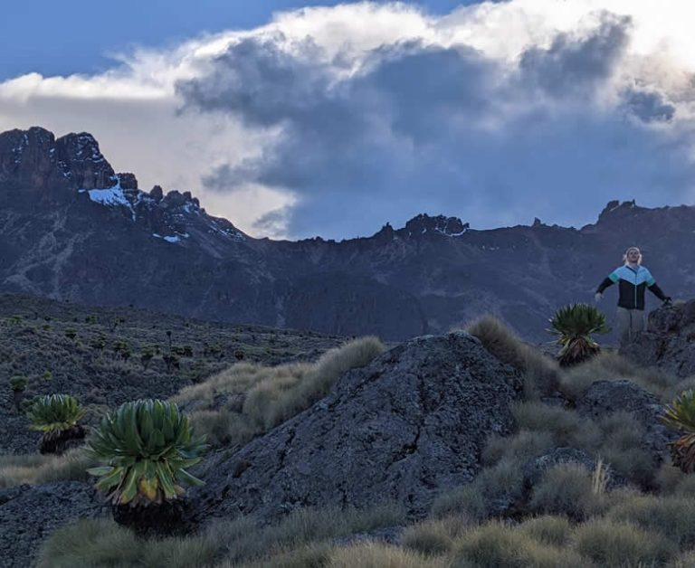

Experience the beauty of our peak mountain, lush rainforests, and vibrant culture. Mt Kenya is the perfect getaway for relaxation and adventure.
Visit Us To Know MoreDiscover adventures and immerse yourself in the beauty of Mt. Kenya with our curated tourism options.
Embark on unforgettable journeys to various altitudes, from gentle nature walks to challenging summit climbs. Experienced guides ensure your safety and enrich your understanding of the mountain's unique ecosystem.
Explore the surrounding national park and conservancies, encountering diverse wildlife like elephants, buffalo, monkeys, and a plethora of bird species. Expert naturalists provide insights into the region's flora and fauna.
Connect with the vibrant communities living around Mt. Kenya. Experience traditional dances, sample local cuisine, and learn about the cultural heritage of the people who call this majestic mountain home.
We provide a range of facilities to ensure a comfortable, safe, and enriching experience during your visit.

Relax in our selection of lodges and camps, blending seamlessly with nature. Choose from rustic charm to luxurious comfort, all with stunning views.

Our experienced guides will lead you on unforgettable adventures, ensuring your safety and enriching your understanding of the mountain's ecosystem.

Savor the flavors of the region with delicious and authentic Kenyan cuisine. Experience fresh, locally sourced ingredients prepared with traditional techniques.